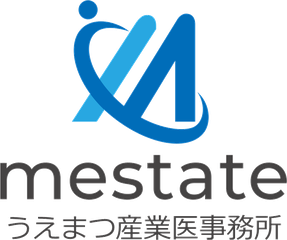

ストレスチェックWeb 利用マニュアル
実施者向け(管理者マニュアル)
対象: 実施者(医師・産業医 上松 弘典) / 発行: うえまつ産業医事務所(Mestate LLC) / アプリURL: https://stres.vercel.app

1. 実施者アカウントについて
実施者(office)アカウントは、契約する全企業のデータを横断して管理できる最上位の権限です。アカウントの発行・削除はシステム管理者(Supabase管理画面)でのみ行えます。
個人結果票・集団分析報告書・CSVには、実施者として医師(産業医) 上松 弘典、実施事務局としてうえまつ産業医事務所が記載されます。
2. 年間運用の全体像
| 時期 | 作業 | 使用メニュー |
|---|
| 実施前 | ①契約企業の登録と調査票(57/80)の設定 ②部署名の登録 ③実施事務従事者の招待 ④実施年度の配布URL・QR発行 ⑤配布依頼 | 企業管理 / 部署管理 / ユーザー管理 / 配布URL・QR |
| 実施期間中 | 受検状況の確認、面接指導申出への対応(産業医面接の調整) | 結果一覧 / 面接指導申出 |
| 実施後 | 配布停止、高ストレス者への勧奨、集団分析報告書の作成・提供、結果の保存(5年) | 配布URL・QR / 集団分析 |
3. ログイン後の画面(メニュー)
覗き見防止のため、ログイン直後は結果を表示せずメニュー画面が開きます。使う機能を選んでください(画面上部の「≡ メニュー」でいつでも戻れます)。企業と実施年度は画面上部のセレクタで切り替えます。
| メニュー | 機能 |
|---|
| 📋 結果一覧 | 企業・年度ごとの全結果。高ストレスで絞り込み / 行クリックで詳細と個人結果票(PDF) / 部署名の修正 / 再受験のため削除 / CSV出力 |
| 🩺 面接指導申出 | 全企業の申出の確認・状況更新(申出受付→日程調整済→実施済/取消) |
| 📊 集団分析 | 部署別集計(10名未満は非表示)と集団分析報告書(PDF) |
| 🔗 配布URL・QR | 受検用URLの発行 / 停止・再開 / 再発行 / QRコードPNGダウンロード |
| ✉️ ユーザー管理 | 従業員・実施事務従事者の招待(単発、またはCSV一括: メール, 企業コード の2列)、メンバー一覧とロール変更 |
| 🏢 企業管理 | 契約企業の追加・名称変更・調査票の設定(削除は誤操作防止のため不可)。企業名・企業コードで並べ替え可 |
| 🗂️ 部署管理 | 受検時に選択できる部署名の登録・編集・並び順 |
| 📝 アクセスログ | 誰がいつ何をしたかの記録。閲覧ログと操作ログを切り替えて確認(削除不可) |
4. 初期設定の手順
1企業を登録する
「企業管理」で企業名と企業コード(例: MST001)を入力して追加。
2調査票を選ぶ(57項目版 / 80項目版)
「企業管理」の一覧で企業ごとに設定します。既定は57項目版です。
3部署名を登録する
「部署管理」で企業の部署を登録すると、従業員の受検画面で選択肢になります(表記ゆれの防止)。
4実施事務従事者を招待する
「ユーザー管理」でメールアドレス・企業・ロール「実施事務従事者」を選んで招待。本人がメールのリンクからパスワードを設定すると利用開始できます(初回ログイン時に人事権なしの誓約が必要)。
5受検用URLを発行する
上部で企業と実施年度を選び、「配布URL・QR」で「配布URLを発行する」。このURLとQRは該当企業の実施事務従事者の画面にも自動で表示されます。
6実施事務従事者に配布を依頼する
社内一斉メール等でURLを配布し、従業員は自己登録(メール認証)で受検します。
受検は配布URLに設定した実施年度で記録されます。年度セレクタで来年度を選んで発行すれば、年度開始前の準備も可能です。実施期間が終わったら「配布を停止する」で受付を締め切れます(「URLを再発行する」は旧URLの無効化)。
5. 調査票(57項目版 / 80項目版)
- 57項目版: 厚生労働省「職業性ストレス簡易調査票」(約10分)。
- 80項目版: 57項目に新職業性ストレス簡易調査票 推奨尺度セット短縮版の23項目(職場の資源・ワークエンゲイジメント等)を加えたもの(約13分)。
- 高ストレスの判定基準は両者で同じです(判定は57項目部分で行います)。80項目版では個人結果票と集団分析報告書に追加22尺度の結果(全国平均との比較)が加わります。
- 設定は企業ごと・今後の受検分から適用されます。受検済みの結果は、受検時の調査票で解釈されるため影響を受けません。
集団分析の一貫性のため、同一事業場・同一年度の途中で切り替えることは避けてください。
6. 部署の管理と表記ゆれの修正
- 部署管理で登録した部署名が、従業員の受検画面で選択肢として表示されます(一覧にない場合は従業員が直接入力もできます)。
- 直接入力による表記ゆれ(例: 「営業」と「営業部」)があると別部署として集計されます。結果一覧で対象者の行を開き「部署名の修正」で統一してください。その年度の結果と本人の登録部署の両方が更新されます。
7. 担当者の交代(ロール変更)
実施事務従事者の交代は、「ユーザー管理」のメンバー一覧から画面上で対応できます(SQLの操作は不要です)。
1新任の方を招待する(ロール: 実施事務従事者)
2前任の方のロールを「従業員」に変更する
変更すると誓約はリセットされ、実施事務従事者になった方は初回ログイン時に必ず誓約を行います。実施者アカウントは変更対象外です(操作はログに記録されます)。
8. 面接指導申出への対応フロー
1従業員が申出→本人・実施者・該当企業の実施事務従事者の3者に通知メールが届く(本文に個人のスコアは含まれません)
2「面接指導申出」で本人の相談したいこと・連絡事項を確認し、個人結果票(結果一覧から)を参照
3面接日程を調整し状況を更新(申出受付 → 日程調整済 → 実施済 / 取消)
厚生労働省の指針により、面接指導の申出をもって結果を事業者へ提供することに同意したものとみなされます。申出画面でその旨を本人に説明し、同意の確認にチェックしないと申出できない仕組みになっています。申出を理由とする不利益な取り扱いは法律で禁止されています。
9. 個人結果票と集団分析報告書
- 個人結果票: 素点換算表(男女別)による19尺度の評価、3分類のレーダーチャート、領域別得点と高ストレス判定、アドバイスを収載。80項目版では職場の資源など22尺度と全国平均との比較が加わります。結果一覧の行クリック→「結果票を開く(印刷・PDF)」。
- 集団分析報告書: 部署別の高ストレス率、仕事のストレス判定図(量的負担×コントロール / 職場の支援)を健康リスク(全国平均=100)とともに表示し、全国平均を⓪として同じ図の中で比較できます。職場のストレスプロフィール(レーダーチャート)、尺度別の平均評価点(全国平均3点との対比、単一項目尺度・点の向きの表示つき)を収載。
- 個人特定防止のため10名未満の部署は除外されます。各部署が10名未満でも全体で10名以上なら「全体」が表示されます。
10. CSV出力の内容
「結果一覧」のCSV出力では、明細の前に次の情報が付きます(Excelでそのまま開けます)。
| 項目 | 内容 |
|---|
| システム | ストレスチェックWeb 職業性ストレス簡易調査票(57項目/80項目)準拠 / うえまつ産業医事務所 |
| 実施者名 | 医師(産業医) 上松 弘典 |
| 産業医所在地 | うえまつ産業医事務所 京都府京都市中京区錦小路通室町西入天神山町280 4階 |
| 事業場名 / 実施年度 / 調査票 | 対象の企業名・年度・調査票の種類 |
| 受検者数 / 高ストレス者数 / 高ストレス者割合 / 面接指導希望者数 | 人数は数値として出力(Excelで右揃え・集計可能) |
11. アクセスログ(閲覧ログ・操作ログ)
「アクセスログ」では、日付で絞り込みながら次の2種類を切り替えて確認できます。
- 閲覧ログ: 結果一覧・個人結果詳細・申出一覧・集団分析報告書・配布URLの表示
- 操作ログ: CSV出力、ユーザー招待、面接指導の申出、結果削除(再受験対応)、部署名の修正、部署マスタの追加・変更・削除、企業の追加・名称変更、配布URLの発行・再発行・停止・再開、ロール変更
実施事務従事者の操作も氏名つきで記録されます。ログは削除できません。
12. 紹介用サンプル(デモ)
https://stres.vercel.app/demo はログイン不要で開ける紹介用ページです。架空の「モデル株式会社」(100名・5部署)のデータで、受検画面の体験、個人結果票(高ストレス/非該当)、産業医面接指導の申出フォーム、集団分析報告書のサンプルを表示できます。57項目版・80項目版を切り替えられます。
データはすべて架空で、実際の受検データベースには保存されません(実企業の集計・CSV・ログにも混ざりません)。営業・導入説明にそのままご利用いただけます。
13. 運用上の注意
- 結果データは5年間保存。原則削除・改変できません(例外は本人からの誤回答の申出に基づく「再受験のため削除」のみ。当年度かつ直近の結果に限られ、操作は記録されます)。
- 10名未満の集団の集計は表示されません(個人特定防止)。
- すべての閲覧・出力・変更操作はログに記録されます。
- 実施者アカウントの追加・削除、企業をまたぐ担当変更はシステム管理者作業です。
- 安全のため、ブラウザを閉じるとログアウトされ、20分間操作がないと自動的にログアウトします。
- メール送信(招待・通知)はResend経由です。大量招待時は送信数の上限(契約プラン)にご注意ください。
14. 困ったとき
| 症状 | 対処 |
|---|
| 結果一覧が0件 | 年度セレクタを確認(画面に「別の年度にデータがあります」と案内が出ます) |
| 招待がエラーになる | 企業コードの誤り、または既登録メール。エラーメッセージを確認 |
| 通知メールが届かない | Resendの送信記録(resend.com/emails)とVercelのログを確認 |
| 従業員がログインできない | 確認メール未クリックが最多。ログイン画面の再送ボタンを案内 |
| 集団分析に部署が出ない | 10名未満か、部署名の表記ゆれ。結果一覧の「部署名の修正」で統一 |